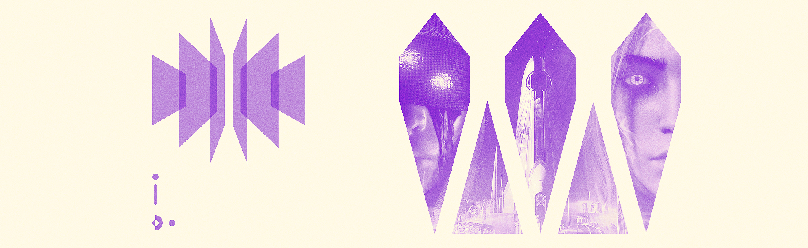

Written from the perspective of Eris Morn
There’s a heat behind my eyes. I’d forgotten warmth, what it felt like. All I can make out are the weapons pointed at my face. If this is my fate, I will end with the fury of a tempest.
Petra: “Lower your guns!”
Petra?
P: “Eris Morn. Apologies for the welcome. Never know what will come out of there.”
The Dreaming City. I did not think I ever would set foot here.
Eris Morn: “This place… it’s miraculous .”
P: “Don’t get used to it. We won’t be staying long.”
E: “Where are we going?”
P: “To see the Queen.”
E: “The Witch aims to bait me. I require your guidance, my Queen .”
Mara Sov: “She is calculated, meticulous. Proceed cautiously. Her intent is obscured.”
My Queen is wise.
E: “Where do we begin?”
M: “Eris… there is understandable urgency in this matter…”
Not you too. Please do not think lesser of me.
M: “You were on the brink of death. That is not a loss I’m willing to bear.”
E: “The shadow of death cannot hinder me.”
She takes a concerned pause at my words. Did I misspeak?
M: “You walk a thin line between duty and obsession. Take it from one with experience.”
E: “I am driven, but only due to what is at stake.”
M: “And what is that to you?”
E: “My Queen … everything. Human and Awoken alike will wash up on the shores of death if we do not act.”
M: “No. What is it to you?”
E: “…vengeance.”
I watch as she deliberates the validity of my claims. To be dismissed as mad now would be my end.
M: “A noble cause.”
The same desire runs through my Queen’s veins.
M: “Savathûn’s cunning has its limits... We retrieved a log dating back to the Golden Age that may aid in deciphering Her riddles. It is one of many. The rest are scattered across the stars.”
E: “I must seek them all out.”
M: “You will not have to do it alone.”
My queen.
The months working alongside my Queen were exhilarating and treacherous. I’ve traversed more of the known universe than I ever thought I would see. Through all the vile creatures vanquished and treasures discovered lurks a new sensation… A place in this story.
We’ve collected several of the logs we seek. Each offers a new perspective on the threat we all face. The Golden Age understanding of the concepts of Light and Darkness were primitive, nascent. I wonder if in the millennia that will come to pass, our comprehension will be viewed similarly. It matters not, if we are unable to avoid our looming calamity.
We have come so far, and now I feel our journey coming to a close.
It’s here, in these ruins. I can sense it.
I push the refuse off an ancient chest.
Inside—what we’ve been searching for.
I read. My worst fears confirmed.
E: “My Queen … it’s been there all along.”
To think I must return to those twisted tunnels where the screams of my fireteam will undoubtedly reverberate throughout my mind…
My fate is eternally bound to that place.
There is no escape.